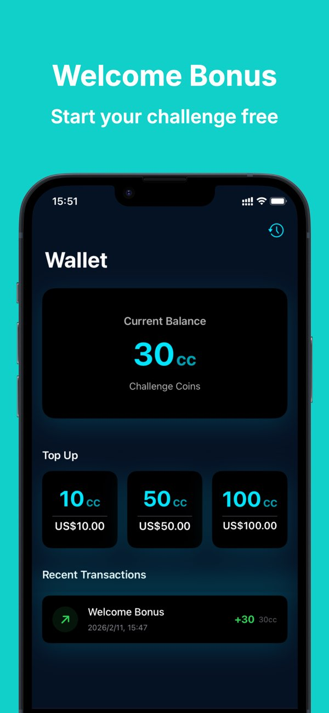
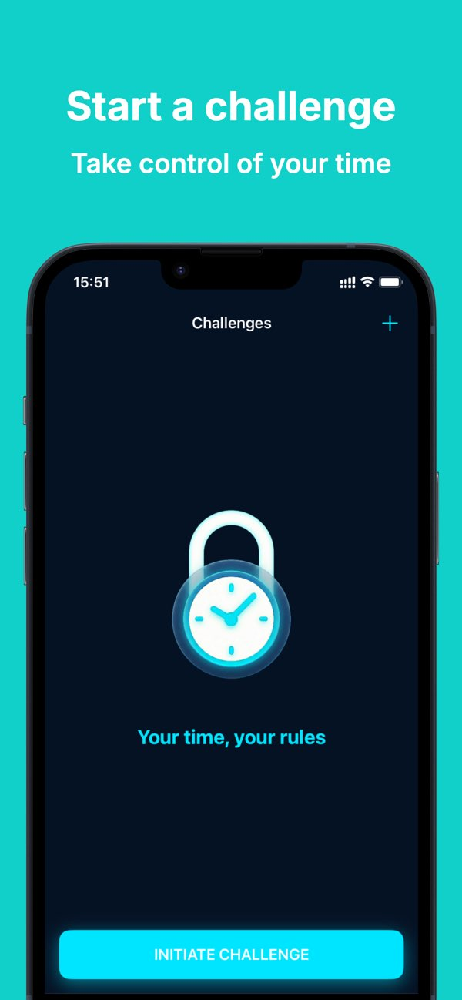
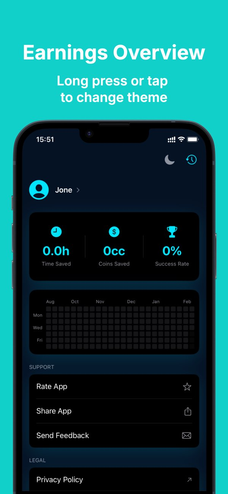
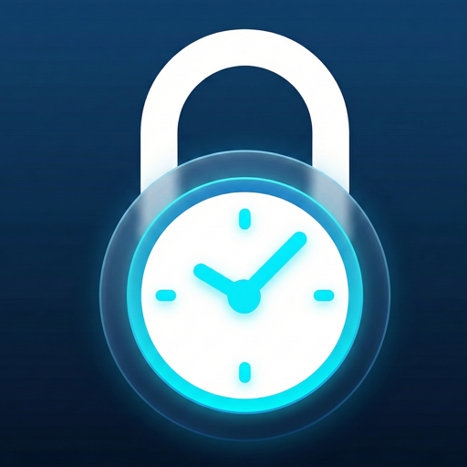

设定挑战
选择要限制的 App 或分类，安排时间段与持续时长，并决定质押多少挑战币。
iPhone & iPad · App Store 免费下载
Fulcrum：App 使用控制把自律变成一场游戏。质押挑战币锁定那些吞噬时间的 App —— 坚持住，币会全额回到你手里；破戒，就永久失去。



信息流被精心设计来劫持你的多巴胺系统。普通的提醒和温柔的打卡很容易被一划而过 —— 所以 Fulcrum 加上了它们没有的东西：破戒的真实成本。
借助「损失厌恶」心理，当无意识的刷屏会让你失去辛苦攒下的挑战币时，你的手指终于会停下来。 这是为你的自控力准备的外骨骼。
三步，让“想要自律”变成“真的做到”。
选择要限制的 App 或分类，安排时间段与持续时长，并决定质押多少挑战币。
发起挑战时会预先消耗挑战币。从这一刻起，每一次克制都有分量。
挑战成功，挑战币全额返还；一旦破戒，消耗的挑战币将永久扣除。
没有令人上瘾的社交信息流，没有多余干扰，只有你和你的数字习惯。
按你自己的时间表，锁定分心的 App 或整个分类，用于深度工作、学习，或战胜拖延。
借助 Apple 屏幕使用时间技术在本地严格监测，挑战结果真实可信，无法自己骗自己。
只展示真正重要的：时间收益、节省金币、成功率，以及记录你坚持轨迹的热力图。
挑战记录仅保存在你的设备或私人 iCloud；服务器只保留匿名交易日志，删除账号即可脱离身份数据。查看隐私政策。
Fulcrum 可免费下载，新用户会获得一份新装奖励挑战币，可直接发起第一次挑战。更多挑战币可通过应用内购买自愿获取。
发起挑战时需要预先消耗一定数量的挑战币。挑战期间遵守规则直到结束，即可全额拿回；如果中途破戒、打开了被锁定的 App，消耗的挑战币将永久扣除。
Fulcrum 使用 Apple 的屏幕使用时间技术，在设备本地监测你所选择的 App 和分类，挑战结果完全在设备端判定。
挑战记录仅存储在你的设备或你的私人 iCloud 中；云端服务器只保留用于记账的匿名交易日志；删除账号后，你的身份数据会被永久脱离。
需要 iOS 18.2 或更高版本，支持 iPhone 和 iPad。支持英语、简体中文、繁体中文、日语、法语、西班牙语、德语、巴西葡萄牙语和阿拉伯语。

现在下载 Fulcrum，守住你的挑战币，为数字生活建立新的秩序。